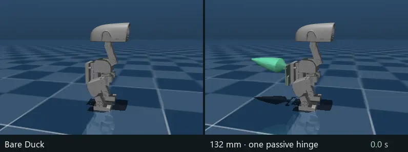

20-second trials
| Tail | Pack mass | Moment offset | Walk | Right get-up |
|---|
What the measurements mean
Length runs from the root pivot to the tip. The widest section is 80 × 50 mm. Pack mass includes the fixed mount. The offset compares the pack’s mean rearward gravity moment during leaning gait with the extra forward head-and-neck moment in a fixed standing pose. A 100% offset describes that one pose. The tail also pulls rearward with the head upright.
Every size uses the same V5 mount, stock feet, flat floor and shipped walking and recovery policies. The get-up trial starts from a 90° right-side fall with a neutral head command. The rendered clips show the first 8 seconds. Full simulation results